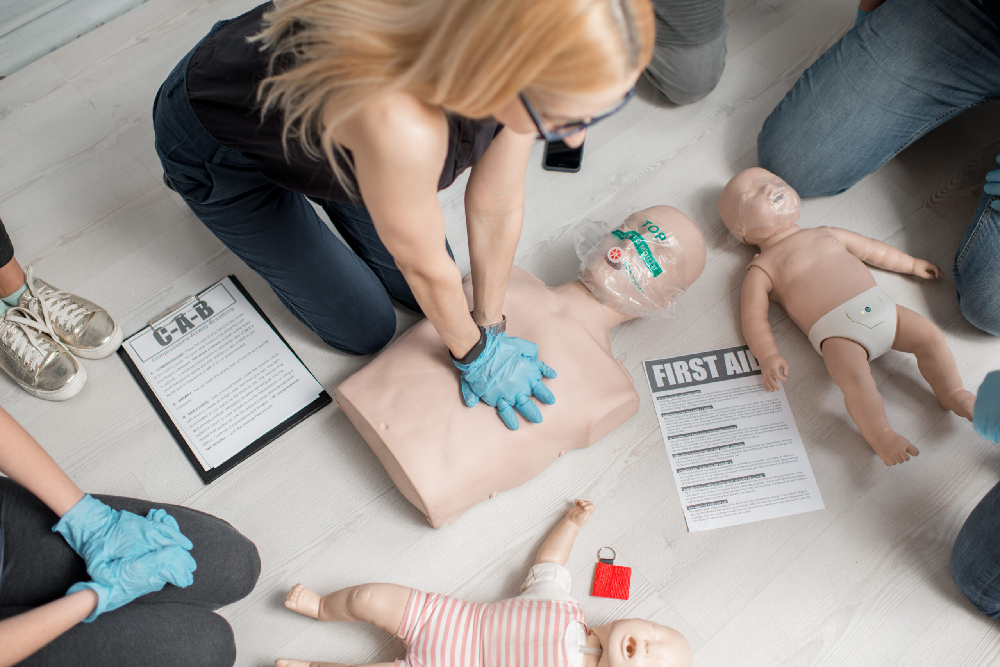

Practical skills
Emergency First Aid at Work Level 3
Gain the essential skills to respond to workplace emergencies, manage incidents safely and provide immediate first aid until professional help arrives.